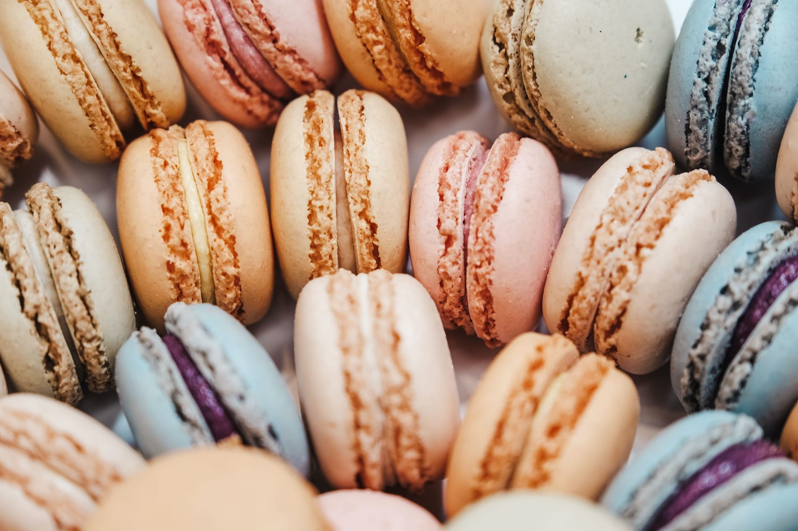

What Is Ratatouille? Ratatouille is a healthy and easy-to-digest stew of summer vegetables. A classic ratatouille includes eggplant (aubergines), zucchini (courgettes), bell peppers, tomatoes, onions, garlic, olive oil and herbs.
What is a macaron? Macarons are light, often brightly colored sandwich cookie consisting of two rounded disks made from a batter of egg whites, sugar, and almond flour surrounding a sweet filling (as of ganache, buttercream, or jam)
What is French Onion Soup? French Onion Soup, a soul-warming and hearty dish that combines sweet, caramelized onions, rich beef broth, and a bubbling layer of cheese, has a history as layered as its flavors! In honor of our favorite food, we’re taking a deep dive into the history of this beloved soup, tracing its roots through centuries of French culinary tradition, and exploring some fun facts along the way!